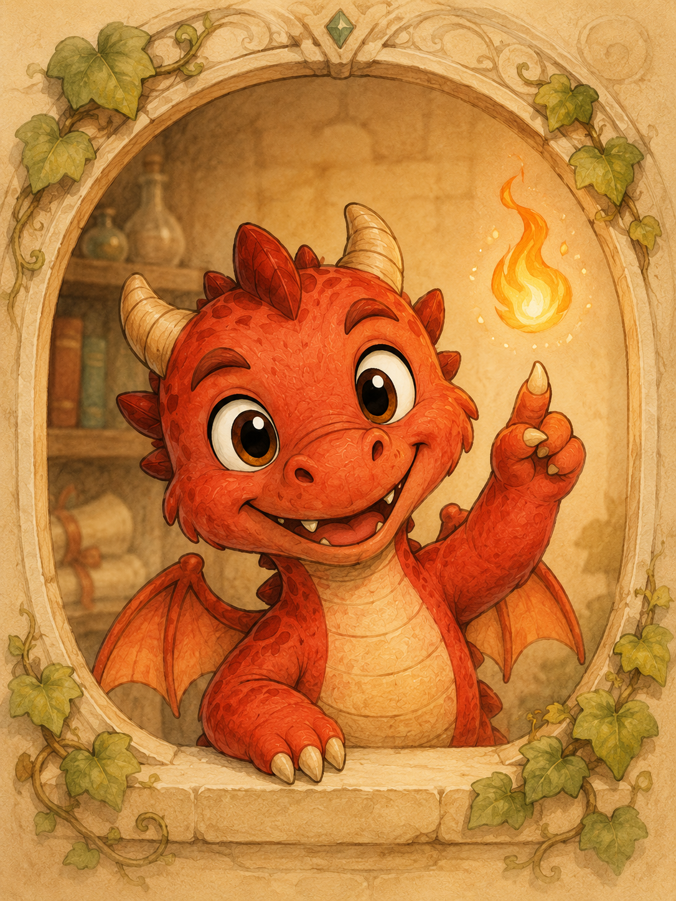
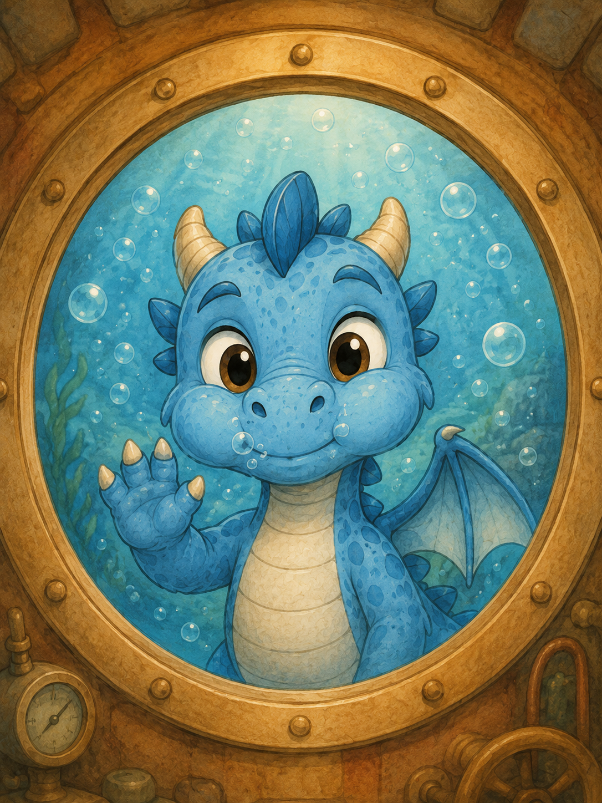
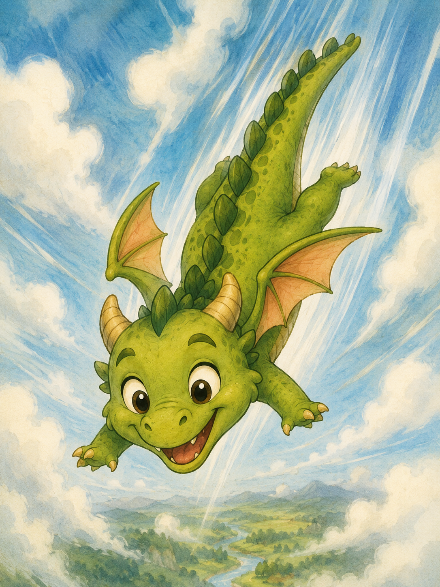
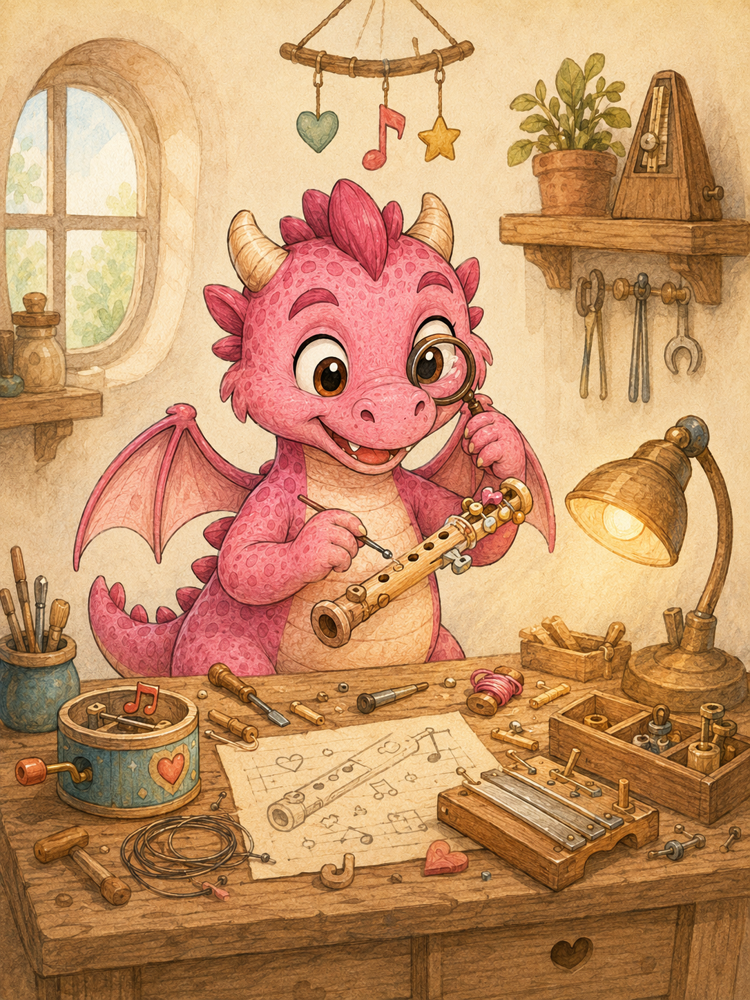
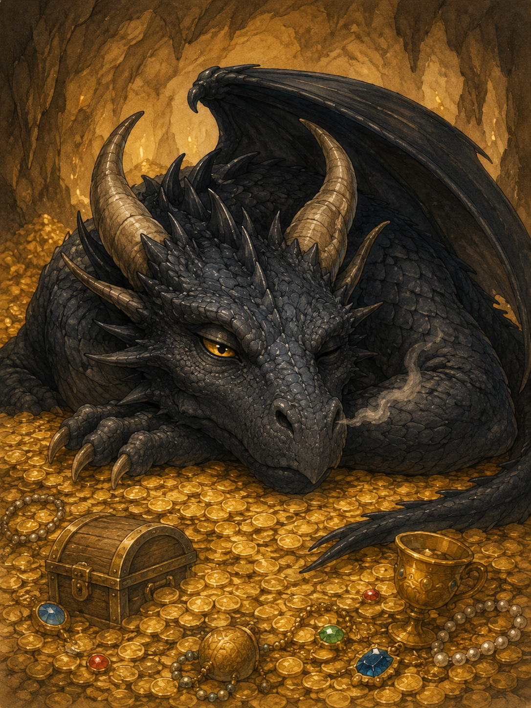
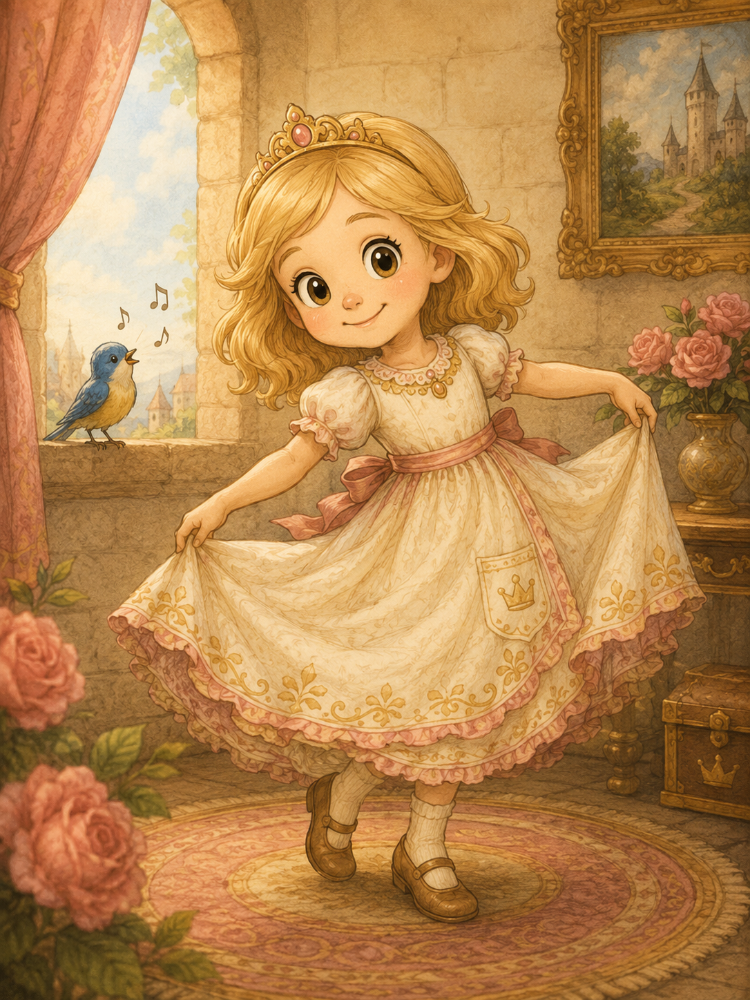
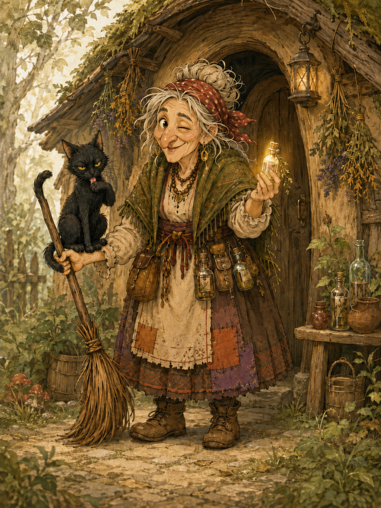
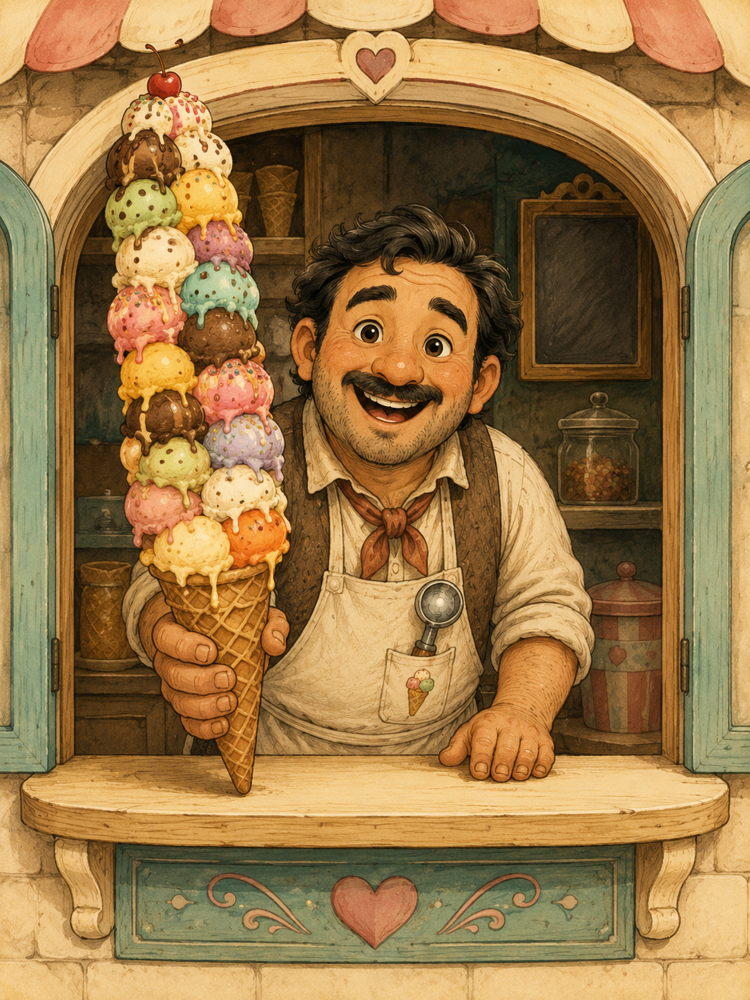

Uhlík
Červený ohnivý dráčik. Chce byť odvážny, len občas zabudne, že plameň vie pomôcť aj narobiť škodu.
oheňodvaha
Dračí atlas
Kartičky postáv pre deti aj rodičov. Zoznámte sa s obyvateľmi kráľovstva bližšie.

Červený ohnivý dráčik. Chce byť odvážny, len občas zabudne, že plameň vie pomôcť aj narobiť škodu.

Modrý vodný dráčik. Keď nenaháňa ryby v rieke alebo nečaruje vodné hady, sedí si pod vodopádom.

Zelená dračica, ktorá berie oblohu ako ihrisko aj knižnicu. Všimne si veci, ktoré ostatní len preletia očami.

Ružová tvorivá dračica. Keď niečo vyrobí, často to hrá, cinká alebo to má vlastný názor.

Pokojná, lenivá, veľmi inteligentná a presne taká nebezpečná, ako treba.

Zlatovlasá princezná, ktorá nie je z porcelánu. Vie sa zašpiniť, rada sa smeje a má skvelé otázky. K dráčikom má blízko a Spievanka ju berie ako najlepšiu parťáčku na hranie.

Bylinkárka, alchymistka a metlopilotka bez prehnaného vzťahu k predpisom.

Najdôležitejší človek v meste, ak sa pýtate detí. A možno aj niektorých dospelých. Občas to preháňa s veľkosťou porcií.